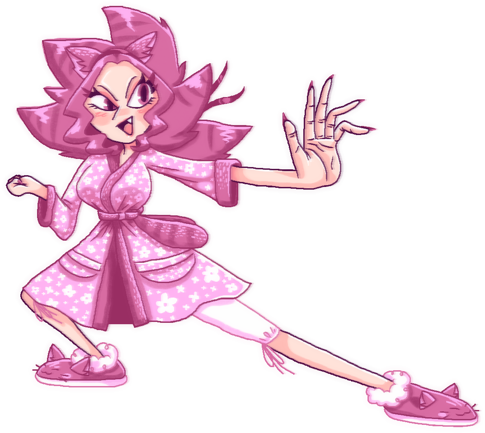

Анялу Рожевий Клубок, також Анялу, іноді Нялу, Ялу або просто Лу - вигадана 18-річна дівчина демонічного походження, одягнена як типова "кетґьорл". Має дві форми, у які може обертатися: кішка та людина. Один із найсильніших персонажів свого вигаданого світу.
Анялу - струнка дівчина, має пишне волосся рожевого від природи кольору. Очі гоструваті, "котячі" із великими верхніми віями, райдужки мають пурпуровий колір, зіниці теж "котячі". Голова ромбічної, але трохи схожої на овал форми, з гоструватим підборіддям. Ніс прямий, широкий. Має довгі гострі нігті з пурпуровим лаком. Губи пофарбовані помадою з блиском. Зазвичай одягнена у рожевий халат у білу квіточку із великими рукавами, кишеннями по боках унизу. Підперезана пурпуровим пухнастим смугастим поясом, що нагадує котячий хвіст. Носить рожеві капці з білим пушком на підошвах та котячими мордочками і вушками спереду. На голові має обруч із котячими вушками, завдяки якому може ставати кішкою.
Оскільки Анялу має предка-демона, буде очевидним, чому вона має гострі ікла, "котячі" зіниці та природно рожевий колір волосся. Її зачіска нагадує котячу голову: верхні відростки волосся нагадують вуха, а нижчі - гриву. Ззаду стирчить косичка, із зав'язаним червоним бантиком біля основи.
Щічки мають забавну деталь - коли Анялу червоніє, на її щічках з'являються рум'янці, схожі на прописну малу латинську "u", що натякає на останню літеру в імені персонажа.
Лу весела, добра й непосидюча бешкетниця, водночас будучи відповідальною і дорослою. Маючи цілу "сім'ю" котів(а насправді обернених на них людей) удома, Анялу проявляє до них щиру турботу й любов, через що заслужила від них титул "старости". Відповідно, неважко здогадатися, що Лу має сильний материнський інстинкт, а також є чудовим лідером.
Анялу знатна своїм бойовим і енергійним характером та жахою когось відлупцювати. Враховуючи її неймовірну силу, через це її дуже часто бояться не тільки дрібні злодюжки, але й навіть найстрашніші кримінальні авторитети. Вона дуже любить для розваги нищити своєю надлюдською силою величезні валуни та зрубувати товсті дерева. Анялу здатна до самоконтролю, але якщо її вивести із себе, вона стає агресивною машиною насилля, що здатна навіть жорстоко убити. На щастя, завдяки своєму самоконтролю, за все життя Анялу нікого не вбила.
Дівчина дуже любить миле у будь-якому його прояві. У спокої Анялу любить пити теплий рожевий чай, а також плести шкарпетки. Кожної ночи Лу розповідає своїй котячій ватазі казки, які вигадує сама. Дуже рідко буває, що вона не може придумати казку. На такі випадки у неї купа дитячих книжок. Таким чином, Анялу - творча особистість. Анялу дуже любить спати. Це успадковано нею від її котячої форми. Анялу дуже любить себе. Вона часто дивиться на себе в дзеркало, роблячи милі гримаси, а також робить часто біля нього макіяж та доглядає за собою.
Одна з найкращих подруг Анялу - Дарина.
Анялу, як було згадано вище, має неймовірну силу та витривалість. Вона залишається неушкодженою навіть після ударів, наприклад, сокирою чи мечем або падіння з височенної гори. Крім того, Анялу дуже швидка, має високий стрибок, а також поворотка у повітрі. Має стійкість до вогню та імунітет до важких хвороб.
Це пояснюється її демонічним походженням. Далекий пращур Анялу, Клубок Юліан, що займався шиттям одягу, покохав Руму, рожеву демоницю, відому як "істота без статі" через її здібність обертатися на чоловіка. Унаслідок шлюбу демона та людини з'явився цілий родовід метисів, серед яких були й такі, що успадковували рожевий колір волосся від Руми.
Анялу здатна обертатися на кішку, поки на голові у неї обруч із вушками. Цікаво, що її відмінні сила та витривалість зберігаються навіть у котячій формі.